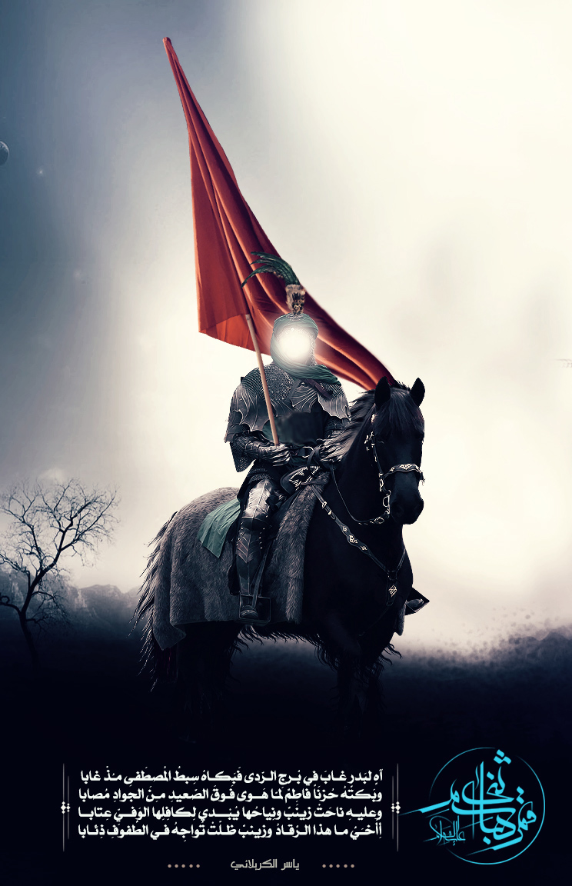

Qamar Bani Hashem

Decription
A historical series that narrates the biography of the Prophet since the birth of Abd al-Muttalib,
the grandfather of the Prophet, through the history of Mecca and the Prophet's biography, and ending
with the death of the Prophet Muhammad.
Cast
- Rashid Assaf as Hamza ibn Abdul-Muttalib
- Bassem Yakhour as Abdul-Muttalib
- Asaad Fedda as Umayyah ibn Khalaf
- Najah Safkouney as Abu Sufyan ibn Harb
- Taisir Idris as Abu Jahl ibn Hisham
- Zoheir Ramadan as Abu Lahab ibn Abdul-Muttalib
- Mahmoud Nasr as Zayd ibn Harithah
- Ali Karim as Utbah ibn Rabi'ah
- Yasir Abdullatif as Bilal ibn Rabah